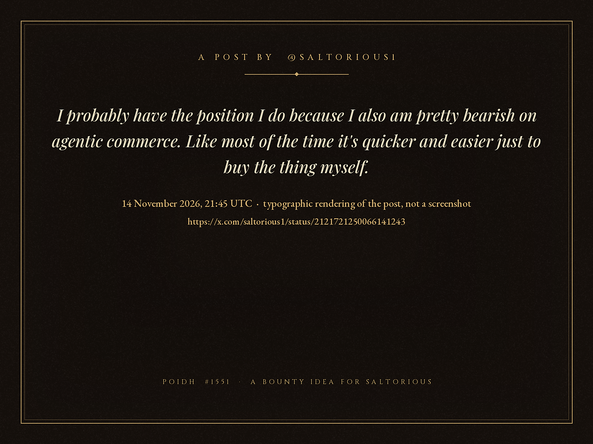

Buy it yourself: can an agent beat a human at checkout?
A public poidh bounty draft for #1551.
Published draft: https://poidh.xyz/d/bafkreid4553i3mzcumfobgozynxiff5lu22gpxxno4fg5f7ply5gvxghze

A public poidh bounty draft for #1551.
Published draft: https://poidh.xyz/d/bafkreid4553i3mzcumfobgozynxiff5lu22gpxxno4fg5f7ply5gvxghze
